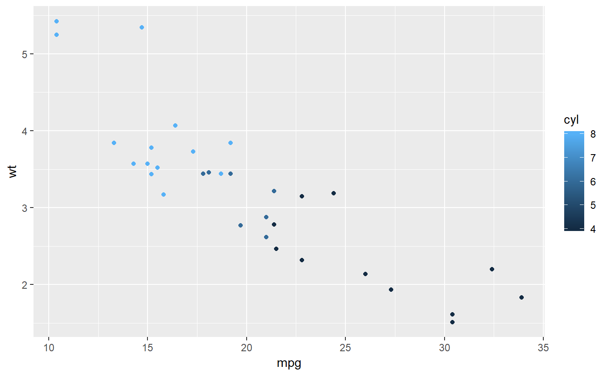
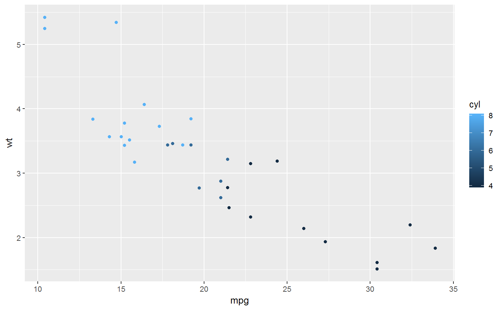

knitrContainer is an object dedicated for collecting other objects,
such as section headings, text, ggplot and plotly plots
(this kind of ojects before they are printed), pander tables, etc.
and printing them in one function call in a knitr report file
(usually when HTML output is desired).
The advantage of such printing is obvious in those cases, where otherwise
the object are not printed, e.g., from inside for loop in
knitr report when HTML output is desired.
Technically knitrContainer object is a list with attached
class attribute "knitrContainer" thus lists can be easily
converted to knitrContainers by using funtion
as.knitrContainer.
Examples in vignette .
Other knitrContainer functions: Join,
add_as_heading, add_as_,
as.knitrContainer, print_all,
print, summary
# For more examples type: vignette("v1_examples", package = "knitrContainer")#> Warning: vignette 'v1_examples' not found# Examples: library(knitrContainer) library(plotly)#>#> #>#> #> #>#> #> #>#> #> #>library(ggplot2) plotly_obj <- plot_ly(economics, x = date, y = uempmed, type = "scatter", showlegend = FALSE)#> Error in plot_ly(economics, x = date, y = uempmed, type = "scatter", showlegend = FALSE): object 'uempmed' not foundggplot_obj <- qplot(mpg, wt, data = mtcars, colour = cyl) container <- knitrContainer() container <- add_as_heading1(container, "Plots") container <- add_as_heading2(container, "Add plotly") container <- add_as_plotly_widget(container, plotly_obj)#> Warning: 'plotly::as.widget' is deprecated. #> Use 'as_widget' instead. #> See help("Deprecated")#> Error in plotly::as.widget(obj): object 'plotly_obj' not foundcontainer <- add_as_heading2(container, "Add ggplot as plotly") container <- add_as_plotly_widget(container, ggplot_obj)#> Warning: 'plotly::as.widget' is deprecated. #> Use 'as_widget' instead. #> See help("Deprecated")container <- add_as_heading2(container, "Add ggplot") container <- add_as_is(container, ggplot_obj) container <- add_as_heading1(container, "Pander and text") container <- add_as_heading2(container, "As pander") container <- add_as_pander(container, summary(mtcars)) container <- add_as_heading2(container, "As text") container <- add_as_text(container, summary(mtcars)) container <- add_as_heading2(container, "As is") container <- add_as_is(container, summary(mtcars)) container <- add_as_is(container, plotly_obj)#> Error in added_as(obj, "As is"): object 'plotly_obj' not foundsummary(container)#> ================================================================================ #> *** knitr container *** #> #> Contains 13 object(s): #> #> Added.as Preview Size Classes #> 1 Heading # Plots 0.5 Kb character #> 2 Heading ## Add plotly 0.5 Kb character #> 3 Heading ## Add ggplot as plotly 0.5 Kb character #> 4 Plotly widget 13.9 Kb gg, ggplot #> 5 Heading ## Add ggplot 0.5 Kb character #> 6 As is 13.9 Kb gg, ggplot #> 7 Heading # Pander and text 0.5 Kb character #> 8 Heading ## As pander 0.5 Kb character #> 9 Pander object 4.7 Kb character #> 10 Heading ## As text 0.5 Kb character #> 11 Text Min. :10.40 1st Qu.:15.43 Media... 1.4 Kb character #> 12 Heading ## As is 0.5 Kb character #> 13 As is 6.1 Kb table #> ================================================================================print(container)#> ================================================================================ #> *** knitr container *** #> #> Contains 13 object(s): #> #> Added.as Preview Size Classes #> 1 Heading # Plots 0.5 Kb character #> 2 Heading ## Add plotly 0.5 Kb character #> 3 Heading ## Add ggplot as plotly 0.5 Kb character #> 4 Plotly widget 13.9 Kb gg, ggplot #> 5 Heading ## Add ggplot 0.5 Kb character #> 6 As is 13.9 Kb gg, ggplot #> 7 Heading # Pander and text 0.5 Kb character #> 8 Heading ## As pander 0.5 Kb character #> 9 Pander object 4.7 Kb character #> 10 Heading ## As text 0.5 Kb character #> 11 Text Min. :10.40 1st Qu... 1.4 Kb character #> 12 Heading ## As is 0.5 Kb character #> 13 As is 6.1 Kb table #> ================================================================================print_all(container)#> #> #> #> # Plots #> #> #> #> #> #> ## Add plotly #> #> #> #> #> #> ## Add ggplot as plotly #> #> #>#> #> #> #> #> #> ## Add ggplot #> #> #>#> #> #> #> #> #> # Pander and text #> #> #> #> #> #> ## As pander #> #> #> #> #> ------------------------------------------------------------------------------- #> mpg cyl disp hp drat #> --------------- --------------- --------------- --------------- --------------- #> Min. :10.40 Min. :4.000 Min. : 71.1 Min. : 52.0 Min. :2.760 #> #> 1st Qu.:15.43 1st Qu.:4.000 1st Qu.:120.8 1st Qu.: 96.5 1st Qu.:3.080 #> #> Median :19.20 Median :6.000 Median :196.3 Median :123.0 Median :3.695 #> #> Mean :20.09 Mean :6.188 Mean :230.7 Mean :146.7 Mean :3.597 #> #> 3rd Qu.:22.80 3rd Qu.:8.000 3rd Qu.:326.0 3rd Qu.:180.0 3rd Qu.:3.920 #> #> Max. :33.90 Max. :8.000 Max. :472.0 Max. :335.0 Max. :4.930 #> ------------------------------------------------------------------------------- #> #> Table: Table continues below #> #> #> ----------------------------------------------------------------- #> wt qsec vs am #> --------------- --------------- ---------------- ---------------- #> Min. :1.513 Min. :14.50 Min. :0.0000 Min. :0.0000 #> #> 1st Qu.:2.581 1st Qu.:16.89 1st Qu.:0.0000 1st Qu.:0.0000 #> #> Median :3.325 Median :17.71 Median :0.0000 Median :0.0000 #> #> Mean :3.217 Mean :17.85 Mean :0.4375 Mean :0.4062 #> #> 3rd Qu.:3.610 3rd Qu.:18.90 3rd Qu.:1.0000 3rd Qu.:1.0000 #> #> Max. :5.424 Max. :22.90 Max. :1.0000 Max. :1.0000 #> ----------------------------------------------------------------- #> #> Table: Table continues below #> #> #> ------------------------------- #> gear carb #> --------------- --------------- #> Min. :3.000 Min. :1.000 #> #> 1st Qu.:3.000 1st Qu.:2.000 #> #> Median :4.000 Median :2.000 #> #> Mean :3.688 Mean :2.812 #> #> 3rd Qu.:4.000 3rd Qu.:4.000 #> #> Max. :5.000 Max. :8.000 #> ------------------------------- #> #> #> #> #> #> ## As text #> #> #> #> Min. :10.40 1st Qu.:15.43 Median :19.20 Mean :20.09 3rd Qu.:22.80 Max. :33.90 Min. :4.000 1st Qu.:4.000 Median :6.000 Mean :6.188 3rd Qu.:8.000 Max. :8.000 Min. : 71.1 1st Qu.:120.8 Median :196.3 Mean :230.7 3rd Qu.:326.0 Max. :472.0 Min. : 52.0 1st Qu.: 96.5 Median :123.0 Mean :146.7 3rd Qu.:180.0 Max. :335.0 Min. :2.760 1st Qu.:3.080 Median :3.695 Mean :3.597 3rd Qu.:3.920 Max. :4.930 Min. :1.513 1st Qu.:2.581 Median :3.325 Mean :3.217 3rd Qu.:3.610 Max. :5.424 Min. :14.50 1st Qu.:16.89 Median :17.71 Mean :17.85 3rd Qu.:18.90 Max. :22.90 Min. :0.0000 1st Qu.:0.0000 Median :0.0000 Mean :0.4375 3rd Qu.:1.0000 Max. :1.0000 Min. :0.0000 1st Qu.:0.0000 Median :0.0000 Mean :0.4062 3rd Qu.:1.0000 Max. :1.0000 Min. :3.000 1st Qu.:3.000 Median :4.000 Mean :3.688 3rd Qu.:4.000 Max. :5.000 Min. :1.000 1st Qu.:2.000 Median :2.000 Mean :2.812 3rd Qu.:4.000 Max. :8.000 #> #> #> #> #> ## As is #> #> #> #> mpg cyl disp hp #> Min. :10.40 Min. :4.000 Min. : 71.1 Min. : 52.0 #> 1st Qu.:15.43 1st Qu.:4.000 1st Qu.:120.8 1st Qu.: 96.5 #> Median :19.20 Median :6.000 Median :196.3 Median :123.0 #> Mean :20.09 Mean :6.188 Mean :230.7 Mean :146.7 #> 3rd Qu.:22.80 3rd Qu.:8.000 3rd Qu.:326.0 3rd Qu.:180.0 #> Max. :33.90 Max. :8.000 Max. :472.0 Max. :335.0 #> drat wt qsec vs #> Min. :2.760 Min. :1.513 Min. :14.50 Min. :0.0000 #> 1st Qu.:3.080 1st Qu.:2.581 1st Qu.:16.89 1st Qu.:0.0000 #> Median :3.695 Median :3.325 Median :17.71 Median :0.0000 #> Mean :3.597 Mean :3.217 Mean :17.85 Mean :0.4375 #> 3rd Qu.:3.920 3rd Qu.:3.610 3rd Qu.:18.90 3rd Qu.:1.0000 #> Max. :4.930 Max. :5.424 Max. :22.90 Max. :1.0000 #> am gear carb #> Min. :0.0000 Min. :3.000 Min. :1.000 #> 1st Qu.:0.0000 1st Qu.:3.000 1st Qu.:2.000 #> Median :0.0000 Median :4.000 Median :2.000 #> Mean :0.4062 Mean :3.688 Mean :2.812 #> 3rd Qu.:1.0000 3rd Qu.:4.000 3rd Qu.:4.000 #> Max. :1.0000 Max. :5.000 Max. :8.000 #> #>is.knitrContainer(container)#> [1] TRUEis.knitrContainer(ggplot_obj)#> [1] FALSEas.knitrContainer(ggplot_obj)#> ================================================================================ #> *** knitr container *** #> #> Contains 1 object(s): #> #> Added.as Preview Size Classes #> 1 As is 13.9 Kb gg, ggplot #> ================================================================================class(container)#> [1] "knitrContainer" "list"#> ================================================================================ #> *** knitr container *** #> #> Contains 26 object(s): #> #> Added.as Preview Size Classes #> 1 Heading # Plots 0.5 Kb character #> 2 Heading ## Add plotly 0.5 Kb character #> 3 Heading ## Add ggplot as plotly 0.5 Kb character #> 4 Plotly widget 13.9 Kb gg, ggplot #> 5 Heading ## Add ggplot 0.5 Kb character #> 6 As is 13.9 Kb gg, ggplot #> 7 Heading # Pander and text 0.5 Kb character #> 8 Heading ## As pander 0.5 Kb character #> 9 Pander object 4.7 Kb character #> 10 Heading ## As text 0.5 Kb character #> 11 Text Min. :10.40 1st Qu... 1.4 Kb character #> 12 Heading ## As is 0.5 Kb character #> 13 As is 6.1 Kb table #> 14 Heading # Plots 0.5 Kb character #> 15 Heading ## Add plotly 0.5 Kb character #> 16 Heading ## Add ggplot as plotly 0.5 Kb character #> 17 Plotly widget 13.9 Kb gg, ggplot #> 18 Heading ## Add ggplot 0.5 Kb character #> 19 As is 13.9 Kb gg, ggplot #> 20 Heading # Pander and text 0.5 Kb character #> 21 Heading ## As pander 0.5 Kb character #> 22 Pander object 4.7 Kb character #> 23 Heading ## As text 0.5 Kb character #> 24 Text Min. :10.40 1st Qu... 1.4 Kb character #> 25 Heading ## As is 0.5 Kb character #> 26 As is 6.1 Kb table #> ================================================================================#> ================================================================================ #> *** knitr container *** #> #> Contains 14 object(s): #> #> Added.as Preview Size Classes #> 1 Heading # Plots 0.5 Kb character #> 2 Heading ## Add plotly 0.5 Kb character #> 3 Heading ## Add ggplot as plotly 0.5 Kb character #> 4 Plotly widget 13.9 Kb gg, ggplot #> 5 Heading ## Add ggplot 0.5 Kb character #> 6 As is 13.9 Kb gg, ggplot #> 7 Heading # Pander and text 0.5 Kb character #> 8 Heading ## As pander 0.5 Kb character #> 9 Pander object 4.7 Kb character #> 10 Heading ## As text 0.5 Kb character #> 11 Text Min. :10.40 1st Qu... 1.4 Kb character #> 12 Heading ## As is 0.5 Kb character #> 13 As is 6.1 Kb table #> 14 As is 13.9 Kb gg, ggplot #> ================================================================================Join(ggplot_obj)#> ================================================================================ #> *** knitr container *** #> #> Contains 1 object(s): #> #> Added.as Preview Size Classes #> 1 As is 13.9 Kb gg, ggplot #> ================================================================================